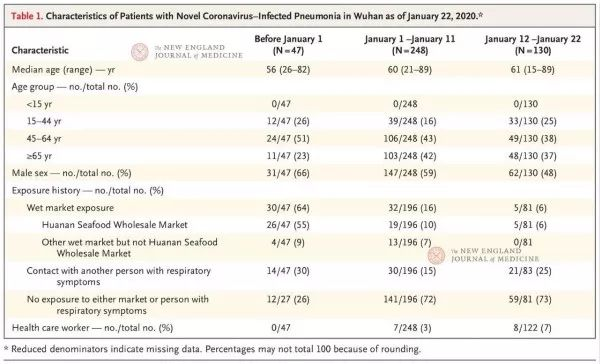

封面报道之三|解毒篇：溯源新冠病毒
原文链接 备份链接 “从严格意义上说，病毒不能算是活着。病毒非生非死，存在于生命与非生命的边界之上。若是处于细胞外，病毒只是存在而已，什么也不会发生。一旦病毒进入细胞，就变成了‘特洛伊木马’。病毒在繁殖时看起来是活着的，但从另外一个角度 …
02.02.2020

本文字数：3224，阅读时长大约5.5分钟
导读：病毒传播路径的信息，为何在病毒全面开花扩散之后，源源不断地发表在论文上。
作者 | 第一财经 马晓华
从新型冠状病毒开始踏足武汉，到蔓延至全国甚至走出国门，这个过程中公众最疑惑的就是，病毒、疫情公开信息为何之前总是慢了一步、缺了一角。
迄今为止，病毒、疫情的公开信息还缺失什么？这些缺失的信息又会给防控新型肺炎带来什么障碍？

患者接触了什么野生动物？
1月28日，河南省卫健委公布了一组该省各地市的确诊病例信息，这在网络上被称为“最详情公布！居住地接触史旅行史住院详情！”
这组公布的病例记录了多个病例的详尽过程，并没有太高深，也没有太多科学术语：
比如其中一个病例：胡某，男，35岁，林州市开元街道办事处人，在株洲市一家公司工作，该公司1名员工于1月25日被确诊为新型冠状病毒感染的肺炎。1月23日胡某与妻子乘火车到达安阳火车站，亲戚开车接回林州家中。24日胡某出现发热、头晕症状，自行服药后体温恢复正常。26日因再次发热到林州市人民医院隔离治疗，后经专家组会诊，诊断为新型冠状病毒感染的肺炎疑似病例。27日，市疾控中心对采集的患者样本进行检测，结果显示呈病毒核酸阳性，予以确诊。
这些内容，其实是门诊医生每天都要问诊，并详细记录在病历本上的内容，并不是一个特殊的病例。不过，在疫情未被重视之前，这样的病例基本是缺失的。
明确每一个患者的感染路径，对于未来的疫情防控却能起到很大的作用。对于公众而言，也可以知道用什么方式避免感染，感染之后通过什么路径去解决问题。“工作量极大，每个病例需要花2个小时。”河南省疾控系统的一位工作人员对第一财经记者表示，这样做很值得。他说，对于流行病学的分析十分重要，遇到病例后，通过理清传播链条，指导社区防控，可以有效切断传播。
“任何时候都不能大意，任何时候都要加强疾控体系建设，以保证随时应对。但是，预防为主的方针在日常工作中落实的太差了。”河南省疾控系统的这位工作人员说。
不过，在抗击疫情的时候，这样的病例基本是缺失的。除了病例，还有一个关键的信息缺失：武汉最早的患者，尤其是那些与华南海鲜市场相关的患者，接触了什么野生动物。
1月26日，新华社从中国疾控中心病毒病所了解到，该所在新型冠状病毒溯源研究中取得阶段性进展，首次从武汉华南海鲜市场的585份环境样本中，检测到33份样品含有新型冠状病毒核酸，并成功在阳性环境标本中分离病毒，提示该病毒来源于华南海鲜市场销售的野生动物。
中国疾控中心在2020年1月1日上午就赶赴华南海鲜市场，针对病例相关商户及相关街区集中采集环境样本515份，运送至病毒病所进行检测。1月12日，病毒病所专家再次在华南海鲜市场采集野生动物贩卖商铺相关标本70份，并转运至实验室进行检测。
此项工作展开的意义，中国疾控中心也明确表示：追溯病毒来源、控制源头、阐明病毒中间宿主，是控制该病毒持续从动物传染到人的关键环节。
可事实上，公众所获取的信息只有：高度怀疑此次疫情与野生动物交易有关。也有1月24日的论文现实，这个病毒与云南的蝙蝠是近亲，接近96%的重合度。但到底是什么野生动物身上检测到了病毒？还有哪些样本也检测到了病毒？至今公众并不知晓。
海鲜市场是不是唯一的源头？
有关疫情、病毒的更多信息，是从近期公开发表的一篇篇论文中传递出来的。
2020年1月24日，北京中日友好医院曹彬及北京协和医学院王建伟作为共同通讯作者，在国际顶级医学期刊 Lancet 《柳叶刀》在线发表题为 《武汉2019年新型冠状病毒感染患者的临床特征》（ “Clinical features of patients infected with 2019 novel coronavirus in Wuhan, China”） 的论文，分析了武汉最初41名确诊病例的临床特征。
这篇研究中称， 武汉最早的病例在12月1日发病，而且与华南海鲜市场没有关联。且研究数据表明，41例确诊病例中的13例，与华南海鲜市场并无关联。
北京时间1月27日，国际顶级期刊Science杂志也在线发表了一篇题为《武汉华南海鲜市场可能并非新型冠状病毒发源地》（ “Wuhan seafood market may not be source of novel virus spreading globally” ）的文章， 称新型冠状病毒或许并非源于华南海鲜市场。
“有患者与华南海鲜市场无直接关系的可能性是存在的。如果华南海鲜市场的产品携带病毒，卖给消费者，消费者接触到病毒后，因为自身免疫力低下进而患病也是自然，这并不意外。因为对于携带病毒的产品，（我们）并没有公布，也没有召回。”一位资深病毒学家表示。
不能否认的是，中国科学家对于这个新发传染病并没有停止科学应该做的事情，溯源、流行病学调查、诊断试剂研制、疫苗研发、药物筛选、临床诊治等等，一个都不会少。
只不过，这些信息大多见诸于论文，特别是病毒传播路径的信息，在公开方面更是打了折扣的。
人传人的判断何时得出？
美国时间1月29日，中国疾控中心领衔的研究团队在新英格兰医学杂志发表了一篇名为《新型冠状病毒感染的肺炎在中国武汉的早期传播动力学》（“Early Transmission Dynamics in Wuhan, China, of Novel Coronavirus–Infected Pneumonia”）的论文，其中提到了一个很重要的发现：研究表明，自2019年12月中旬以来，密切接触者之间已经发生了人际传播。
同时他们研究了三个时期的病例特征：第一个时间段是1月1日（关闭华南海鲜批发市场的日期）前发病的患者；第二阶段是1月1日至1月11日（向武汉提供RT-PCR试剂的日期）期间发病的患者；第三个时间段是1月12日或之后发病的患者。发病较早的患者年龄略轻，男性比例较高，报告华南海鲜批发市场暴露史的比例明显较高。医务人员在病例中所占的比例在三个时间段逐步增加。

由此可见，人传人的迹象早就存在，医务人员也正因此逐渐出现了感染，而并不是官方通报所说的“未见明显的人传人”。但直到1月20日，公众才通过专家之口了解到这一点。
1月20日下午，在针对“新型冠状病毒感染的肺炎疫情”有关防控情况记者问答会上，国家卫健委高级别专家组组长钟南山院士证实了武汉肺炎的“人传人”，且有医护感染。
北京大学第一医院呼吸和危重症医学科主任、新型冠状病毒感染肺炎专家组成员王广发在接受媒体采访时说，自己在1月中旬去武汉参与疫情防控工作时，根据当时掌握的资料，没有明确的证据显示有人传人。特别是医务人员的感染。
1月29日新英格兰医学杂志发表的上述论文，从科学角度提出：“如果其他地区的传播动力学也相似，我们将需要付出相当大的努力来减少传播，从而控制疫情。应在高危人群中采取预防或减少传播的措施”。但这个提醒显得来得晚了些，因为确诊病例已经遍布全国甚至走出国门。
公众想问的是，研究人员1月1日就进入现场进行流行病调查，为何在病毒已经透出“人传人”端倪的时候没有看到它的秘密？病毒传播路径的信息，为何在病毒全面开花扩散之后，源源不断地发表在论文上？
传播系数模拟计算做了吗？
信息公开得不充分，会让公众心中的裂痕不断加深。
为了让信息公开有法可依，2008年5月1日，中国开始实施《中华人民共和国政府信息公开条例》，这是为了保障公民、法人和其他组织依法获取政府信息，提高政府工作的透明度，建设法治政府，充分发挥政府信息对人民群众生产、生活和经济社会活动的服务作用而制定。
伦敦帝国理工学院科学家的处理方式，与我们有所不同。
1月17日，伦敦帝国理工学院网站上发出了一个报告——《估计中国武汉市新型冠状病毒（2019-nCoV）病例的潜在总数》，这个报告通过建模合作，分析出新型冠状病毒的传播系数，同时提醒：在类似规模的SARS和MERS疫情中的经验表明，目前不应排除人与人之间的传播。
对比29日新英格兰医学杂志发表的论文，该文给出了新型冠状病毒基本再生数（R0）约为2.2的预估。这个系数直接关乎后续发病患者增长的速度和量值，但此前公众并不知晓。所以，是科学家没有进行这个传播系数的模拟计算，还是计算后没有第一时间告知公众？
“真正要战胜新冠病毒，就要让信息跑在病毒前面。这要求信息的真实性，也要求信息的及时性。” 经济学家盛洪在其撰写的文章中如此表示。
如果更多有助于防控新型冠状病毒的信息，包括康复患者是否还携带病毒具有传染性等信息，依然只是在后续的论文中不断呈现出来，那我们将只能继续跟在病毒后面。
【推荐阅读】
UP主实拍：“空城”武汉的物价、交通 、生活状态


原文链接 备份链接 “从严格意义上说，病毒不能算是活着。病毒非生非死，存在于生命与非生命的边界之上。若是处于细胞外，病毒只是存在而已，什么也不会发生。一旦病毒进入细胞，就变成了‘特洛伊木马’。病毒在繁殖时看起来是活着的，但从另外一个角度 …
原文链接 备份链接 【财新网】（记者 黄蕙昭）从全国看，疫情还处于早期散发阶段。国家卫健委主任马晓伟在1月26日下午国务院新闻办举行的发布会上表示。截至1月26日20时，中国确诊新型冠状病毒肺炎病例2058例，其中湖北1052例，而非湖 …
原文链接 备份链接 随着疫情消息的增多，各种关于其来源、如何传播与防控的“传言”也接踵而来。为此，我们采访了相关领域的专业人士，试图解答十个公众最为关心的问题。 记者 | 许冰清 肖文杰 倪妮 张云亭 项维肖 毛怡玫 实习记者 | 文思 …
原文链接 备份链接 随着疫情消息的增多，各种关于其来源、如何传播与防控的“传言”也接踵而来。为此，我们采访了相关领域的专业人士，试图解答十个公众最为关心的问题。 记者 | 许冰清 肖文杰 倪妮 张云亭 项维肖 毛怡玫 实习记者 | 文思 …
原文链接 备份链接 口述 | 许平 记者 | 王珊 从2019年12月31日到现在，我所在医院的病人越来越多了，以发热门诊为例，目前每天病人的体量已经是医院平常病人数的10多倍，我们医院还在距离市中心比较偏的医院。冬季本身就是流感高发季， …